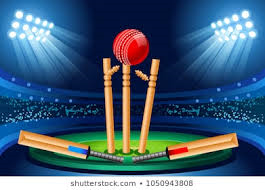

<mat-toolbar color="primary">
  <mat-toolbar-row>
    
    <button class="mat-button" mat-button [matMenuTriggerFor]="menu">CMatches</button>
    <mat-menu #menu="matMenu">
      <button class="mat-menu-item-current" [routerLink]="['/currentmatches']" mat-menu-item>Current</button>
      <button class="mat-menu-item-old" [routerLink]="['/oldmatches']" mat-menu-item>Previous</button>
      <button class="mat-menu-item-upcomming" [routerLink]="['/upcommingmatches']" mat-menu-item>Upcomming</button>
    </mat-menu>
    <button class="mat-button-favourite" mat-button [routerLink]="['/favouritematches']">Favourite</button>
    <button class="mat-button-recommend" mat-button [routerLink]="['/recommendedmatches']">Recommended</button>
    <button class="mat-button-logout" mat-button (click)="logout()">Logout</button>
  </mat-toolbar-row>
</mat-toolbar>